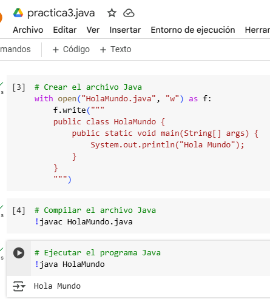

Orientado a objetos: Utiliza un paradigma que ayuda a manejar la complejidad del software.
Portable: Permite ejecutar el mismo programa en diferentes sistemas operativos.
Seguro: Cuenta con un modelo de seguridad que protege los sistemas contra amenazas y vulnerabilidades.
Robusto: Mantiene la integridad de los datos y previene errores.
Multitarea: Permite realizar varias tareas al mismo tiempo.
Distribuido: Permite trabajar en red y ejecutar código en sistemas remotos.
Dinámico: Se adapta a las necesidades del usuario.
Escalable: Se puede adaptar a las necesidades de crecimiento de la aplicación.
Compatible con bibliotecas: Cuenta con bibliotecas estándar para funciones comunes.
Tipos de datos
Tipos de datos primitivos:
byte: Ocupa 8 bits y su rango de valores es de -128 a 127.
short: Ocupa 16 bits.
int: Ocupa 32 bits.
long: Ocupa 64 bits.
float: Ocupa 32 bits.
double: Ocupa 64 bits.
boolean: Sus valores son true o false.
char: Ocupa 16 bits.
Tipos de datos de referencia:
Los datos de referencia son tipos de datos más complejos que hacen referencia a objetos almacenados en memoria. No almacenan directamente el valor, sino una referencia a la ubicación en memoria donde se encuentra el objeto.
Otros tipos de datos de Java:
java.lang.String
java.util.Date
java.util.Calendar
java.sql.Date
java.sql.Time
java.sql.Timestamp
java.math.BigInteger
java.math.BigDecimal
Ventajas y desventajas
Ventajas:
Portabilidad: "Write Once, Run Anywhere" gracias a la JVM.
Orientación a Objetos: Fomenta la modularidad y reutilización de código.
Gran Comunidad y Ecosistema: Amplio soporte de bibliotecas, herramientas y frameworks.
Gestión Automática de Memoria: Recolector de basura para la gestión de memoria.
Seguridad: Características integradas para proteger contra código malicioso.
Soporte Multihilo: Habilidad para manejar procesos concurrentes eficientemente.
Compatibilidad hacia Atrás: Código antiguo sigue funcionando en versiones nuevas de Java.
Desventajas:
Rendimiento Inferior: Comparado con lenguajes compilados como C++.
Uso de Memoria Alto: Requiere más recursos de memoria debido a la JVM.
Compilación Lenta: Puede ser más lenta debido a la conversión a bytecode.
Curva de Aprendizaje: Conceptos complejos como clases, objetos y referencias.
Exceso de Verbosidad: Se necesitan más líneas de código para realizar tareas simples.
Dependencia de la JVM: Necesitas tener la JVM instalada para ejecutar programas.
No adecuado para aplicaciones de bajo nivel: No ideal para tareas que requieren control detallado de hardware.
Impresion de hola mundo

public class HolaMundo {
public static void main(String[] args) {
System.out.println("Hola Mundo");
}
}